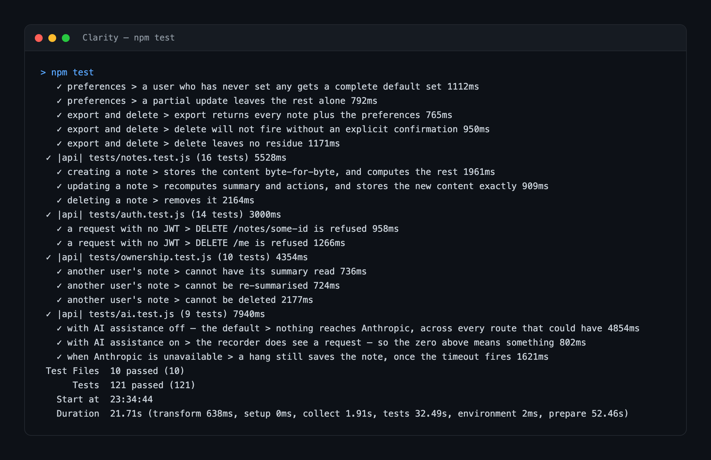

Proving a note never left
Clarity is a note-taking system for people with ADHD. The engineering problem I spent longest on isn't really about notes: it's about drawing a boundary around a third-party AI service, and then proving the boundary holds.
- Built by
- Me
- Stack
- Node, Lambda, API Gateway, DynamoDB, Cognito, React
- Tests
- 121, passing
- Status
- Not deployed
Why the boundary matters
Most note apps assume you'll come back later and organise — tag it, file it, name it well. For someone with ADHD that assumption is the thing that fails, so Clarity computes the organising instead of asking for it: a summary and any action items are worked out when you save, not entered by hand.
Which creates the problem. Summarising well means sending what someone wrote to a language model, and notes are close to the worst category of thing to send anywhere by accident. People write medical appointments, money, and things about their families in them. The users I was building for are also, as a group, already over-monitored at school and at work.
So the feature is off by default and has to be turned on deliberately. That much is easy to say. The engineering question is how anyone could believe it.
How it's decided
AI assistance is a per-user preference, off unless switched on, and the flag can't be set
without consent recorded alongside it — sending aiEnabled: true on its own is
rejected with 422 consent_required.
Asking for the language model while the flag is off returns 409 ai_disabled rather than quietly falling back to the local summariser. A silent downgrade would be friendlier and worse: the caller would have no way to tell which engine wrote the summary it just got back. Every summary is labelled with the engine that produced it for the same reason.
How it's proved
An assertion that the code doesn't call Anthropic is only as good as my ability to imagine every path that might. So the test doesn't inspect the code — it watches the network.
ANTHROPIC_BASE_URL points the SDK at a small HTTP server running inside the test
rig. Anything the API sends, through any code path I thought of or didn't, arrives there and
is counted. One test then drives every route that could plausibly reach the model — create,
update, summarise, read summary, search, list actions, export — and asserts the counter is
still zero.
const { count, requests } = await recorder.hits();
expect({ count, requests }).toEqual({ count: 0, requests: [] });The next test turns the flag on and asserts the counter goes up. That one matters more than it looks: a counter that can only ever read zero isn't evidence of anything.
A zero-hit assertion is only worth anything if the counter can go up. — from the comment on the recorder, explaining why it also answers convincingly enough for the real path to succeed

When the provider misbehaves
Turning the feature on means depending on something outside the system, so the tests cover it failing in the three ways that actually happen:
- An error. The note still saves, summarised locally.
- A hang. The note still saves, once the engine's own timeout fires. The test asserts the whole call finishes in under five seconds — bounded by the timeout I set rather than by the Lambda's, which is the difference between a slow save and a lost one.
- A refusal. These arrive as a perfectly normal 200 with no usable
content, which is why the code checks
stop_reasonbefore reading the response rather than trusting the status code.
In all three the note itself is untouched. The original text is never overwritten by a summary — the summary sits alongside it.
Whose note is it
Every note belongs to a Cognito subject, and the ownership tests try to get at someone else's from every direction: read it, read its summary, update it, re-summarise it, delete it, list it, search for it, export it. Ten tests, and the ones that matter most are the listing and search cases — a wall on the direct route is easy, but data leaks sideways.
A note that doesn't exist returns 404. So does a note that exists and belongs to someone else. Returning 403 for the second would confirm it exists, which is a small leak that costs nothing to avoid.
The CORS test that was lying
The API answers a fixed allowlist of origins, and there's no code path in the service that
can emit *. Preflight is a real Lambda rather than API Gateway's mock
integration, because a mock can only be handed one hardcoded origin and an allowlist needs
to choose per request.
I'd written the CORS tests over HTTP, and they passed. Then they kept passing for origins
that should have been refused. serverless offline decorates every response with
its own CORS headers, so the emulator was echoing back origins my handler had never
approved — and no combination of flags turned it off. The assertion was measuring the
emulator, not my code.
So the guarantee moved to a unit test that calls the response builder directly, plus two checks that go through the emulator's Lambda-invocation endpoint, which returns the raw handler response with nothing added. On a real API Gateway, a proxy integration passes the handler's headers through untouched, which is what those tests now pin.
What I measured, and what it doesn't show
Over a seeded 500-note corpus, 100 samples after 20 warm-ups, against DynamoDB Local:
createNote avg 2.7ms p95 3.5ms
getNotes (list) avg 4.2ms p95 5.3ms
getNotes (search) avg 29.2ms p95 32.2ms
summarize avg 4.1ms p95 5.4msComfortably inside the 350ms p95 budget — and I don't think that means very much. There's no API Gateway hop in those numbers, no cross-availability-zone DynamoDB call and no Lambda container start. It's a lower bound and a regression detector, not a performance result. What it does establish is that nothing in the handlers is pathological, and that once this is deployed the figures will be dominated by platform and network overhead rather than by anything I wrote.
The same harness at 2,000 notes puts search at 87.4ms average, roughly linear in corpus size, which is what an in-Lambda TF-IDF build should do. That's where the "fine to about one or two thousand notes per user" ceiling comes from. The fix — an inverted index written on save — stays unbuilt until someone is near that number, and the search function is shaped so the scorer can be swapped without touching a caller.
Where it stands
Nothing is deployed. serverless package runs clean for both stacks, but a real
deploy needs AWS credentials this build doesn't have, so it hasn't happened.
The repo keeps a status file listing every feature as built, in progress or planned, and the
rule is that public copy can only describe something in the present tense once it says
built. Nothing is marked built, because nothing is deployed. That rule is why
this page says a test exists and a feature works in the codebase, rather than saying Clarity
does things for people — it doesn't yet, and I'd rather write the constraint down than
remember to be careful.
The repository is private for the moment. If you'd like to look at the tests or walk through any of this, ask me and I'll set that up.